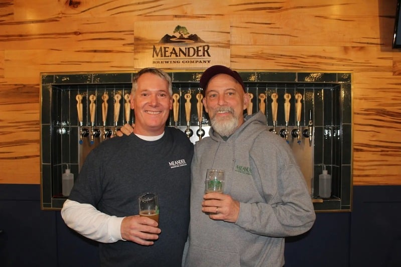
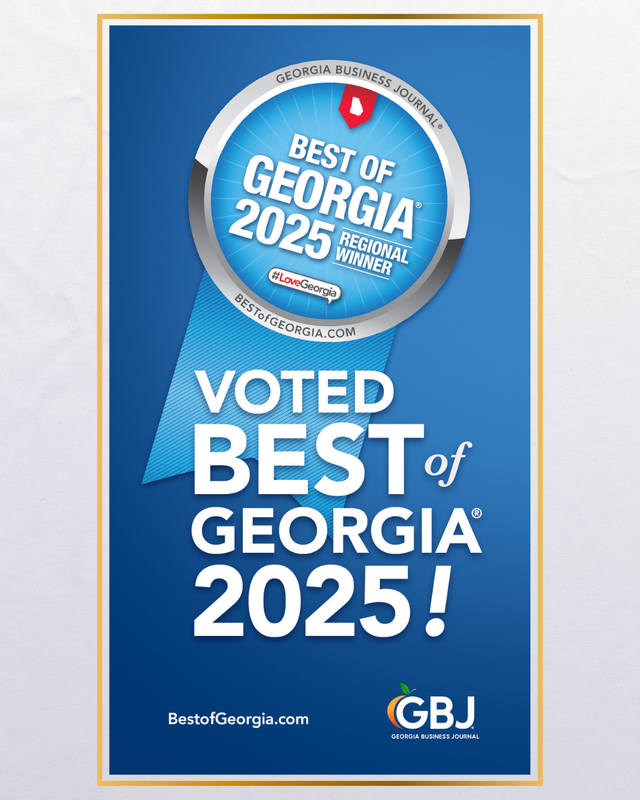

Everyone's Welcome

Meander Brewing Co. has been a dream of the two owners, Mike Branam and Paul Bushell, for almost two decades.
From countless awards at beer festivals to late nights in each other's home bars, the two have had a clear goal: create some of the best craft beer around. They built the recipes on kitchen scales, stress-tested them on friends, and kept the ones that earned a second pour.
When the time finally came to open the doors, Buford was the natural home. It's where their families had rooted, where the local supply chain is short enough to know every grain and every hop by name, and where a neighborhood taproom could actually mean something. Meander opened in 2024 with the same philosophy that got them there: use the freshest ingredients, respect the styles, and keep pouring what you'd want to drink.
The result is a range wide enough for the craft beer diehard and the casual light-beer drinker to sit at the same table and each be happy with what's in front of them. A pilsner and a tropical double IPA. A cream ale and a farmhouse saison. A root beer for the kids. The name says it: wander through the list.

Twenty years of homebrewing, a barn full of ribbons, and a preference for beers that reward a slow sip.
The other half of the home-bar duo. Pushes the hoppy stuff and the experimental batches.
We utilize the wonderful local ingredients available to us to keep the beer as fresh as it can be.
We aim to be a staple of Buford. Trivia nights, fundraisers, local partnerships — we want to be more than a bar.
Games to keep the family entertained, an outdoor beer garden for furry friends, and the big games on the TVs.
Regular fundraisers for local causes. Our patio doubles as a venue for neighbors who need a hand.
The best way to understand what we're building is to come drink a pour in person.